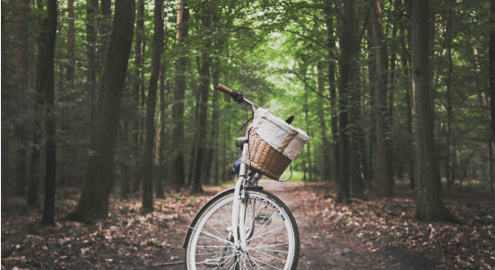
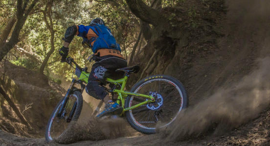
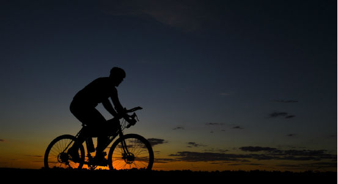

Guided Adventure Tours!
Saddle Peak Trail Ride - Easy

Take a Leisure ride with us through a magical forest under the shadow of Saddle Peak.
- When: Daily Rides Start at 9am, 1pm, and 4pm
- Who: Great for beginners and families
- Cost: $25.00 per adult and $15.00 per child
- Where: Saddle Peak just 12 minutes NE of Bozeman
- Requirements: None!
All tours are accompanied by a trained guide. All guides have first aid and a satelite phone in case of an emergency
Battle Ridge Downhill Course - Advanced

Ready for some hardcore riding? Try out our downhill course and test your limits! This tour is intended for advanced riders only
- When: Daily trip leaves at 9am and returns at 4pm
- Who: *Advanced riders only
- Cost: $40.00 per person - Includes a bagged lunch
- Where: Battle Ridge 25 minutes NE of Bozeman
- Requirements: Must have full face shield helmet
*Riders may not be permitted to attend at the discretion of the guide - pending on skill level of the rider
Chestnut Mountain Night Time Ride - Easy

Watch the sunset and welcome the night as we take you through the picturesque trails of Chestnut Mountain
- When: Daily ride starts at 9pm - returns at midnight
- Who: Great for couples and night owls
- Cost: $35.00 per person
- Where: Chestnut Mountain 15 minutes SE of Bozeman
- Requirements: Must have a mounted light on bicycle
All tours are accompanied by a trained guide. All guides have first aid and a satelite phone in case of an emergency